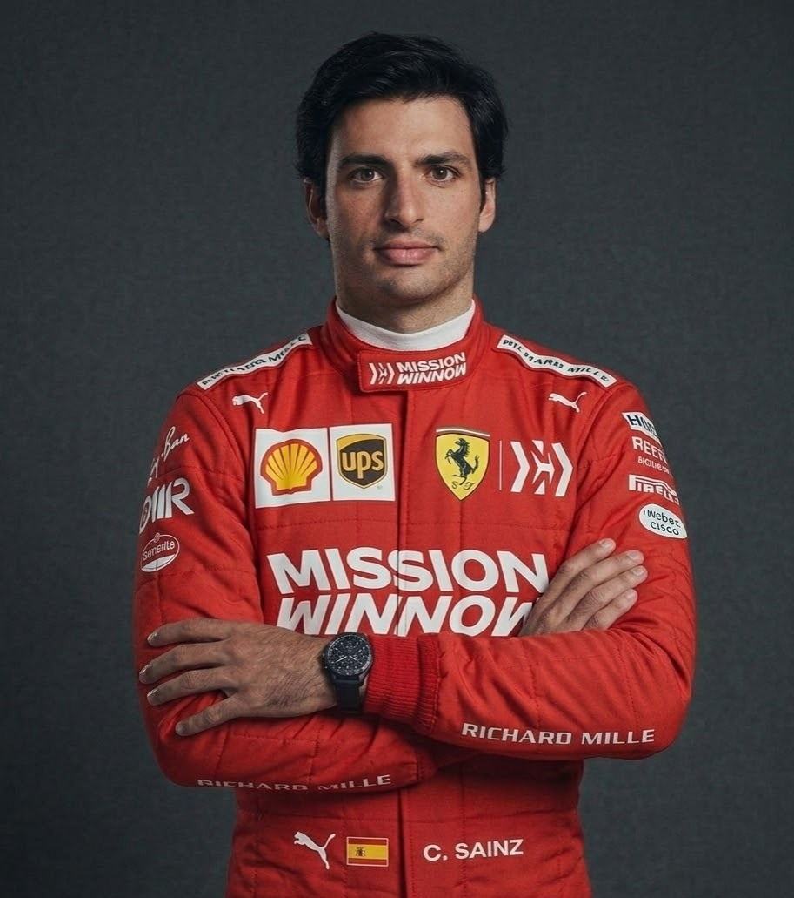
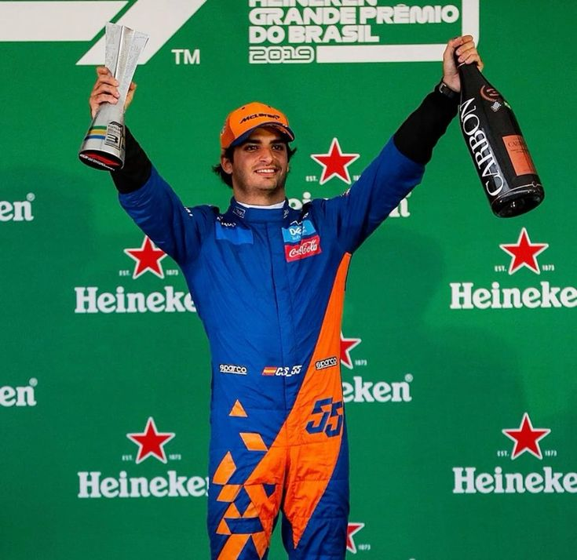
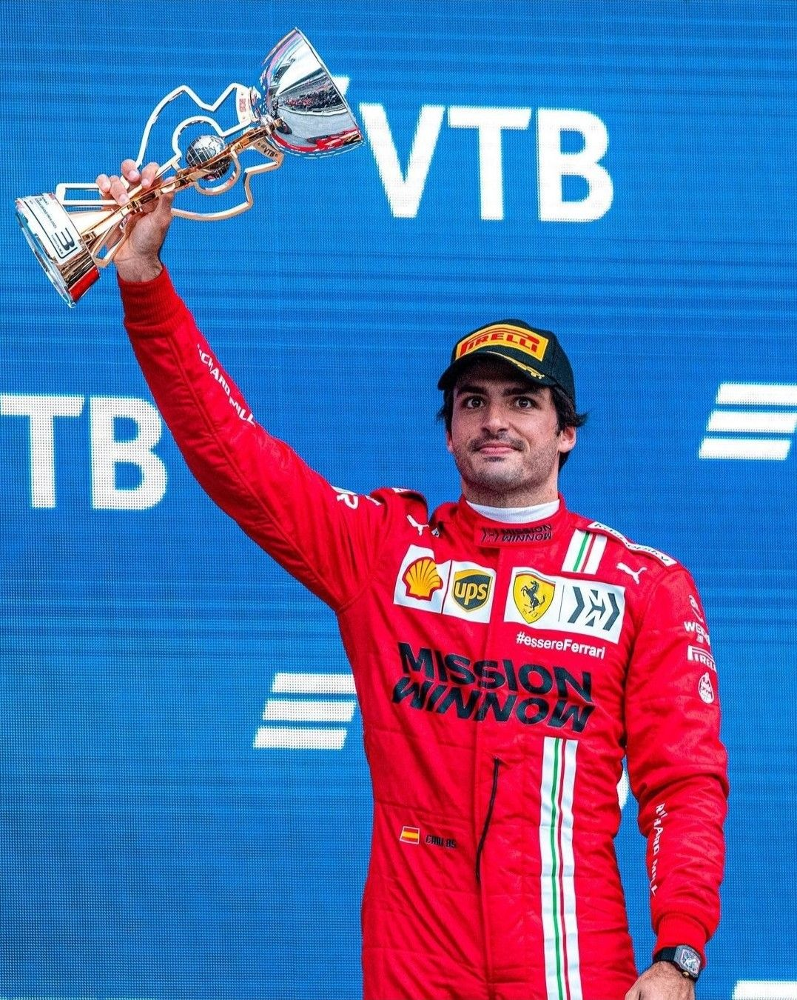
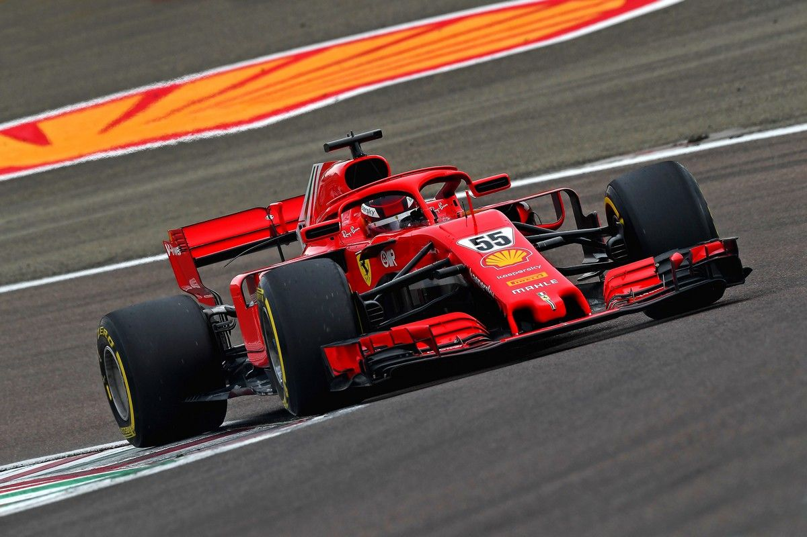

DRIVER PRESENTATION
Trayectoria Pragmática y Virtuosismo Competitivo de Carlos Sainz en la Fórmula 1 Contemporánea
Carlos Sainz Vázquez de Castro inició su formación de elite en el karting español (1989), beneficiándose del legado paterno de su padre, bicampeón mundial de rally. Su ascenso metodológico a través de F4, F3 y F2 estableció un patrón de adaptación técnica excepcional a diferentes monoplazas. El debut en Fórmula 1 con Toro Rosso (2015) inauguró una carrera marcada por la consistencia y la capacidad de maximizar el potencial del vehículo, independientemente de su competitividad estructural. Su paso por Renault, McLaren y Ferrari (2021) demostró su versatilidad competitiva y habilidades de adaptación táctica. Durante el período 2021, Sainz se consolidó como piloto de élite mediante la obtención de su primera victoria en Gran Bretaña, validando su estatus técnico y demostrando que su aparente "fortuna competitiva" era resultado de precisión estratégica. Con más de 300 podios potenciales y una carrera en ascenso, Sainz personifica el modelo del piloto versátil y técnicamente completo de la era actual.

Brasil 2019: Una remontada espectacular desde la última posición hasta el podio con McLaren, confirmando su talento.

2021: Su primer año con Ferrari donde demostró una adaptación asombrosa, superando las expectativas iniciales.

Su primer podio vestido de rojo en las calles del Principado, marcando el inicio de una era exitosa con Ferrari.